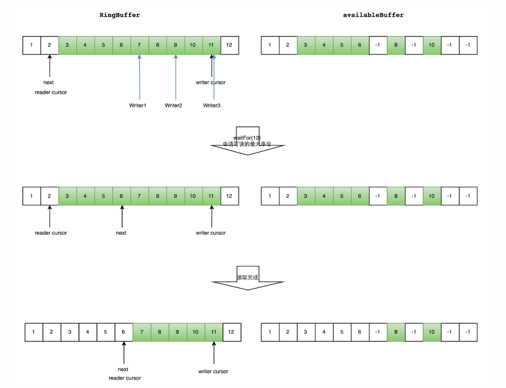

概述
Disruptor是英国外汇交易公司LMAX开发的一个低延迟高性能无锁的有界循环数组。基于Disruptor开发的系统单线程能支撑每秒600万订单，目前已经开源的并发框架，Log4j2底层使用的并发框架。
Java内置队列
| 队列 | 有界性 | 锁 | 数据结构 |
|---|---|---|---|
| ArrayBlockingQueue | bounded | 加锁 | arraylist |
| LinkedBlockingQueue | optionally-bounded | 加锁 | linkedlist |
| ConcurrentLinkedQueue | unbounded | 无锁 | linkedlist |
| LinkedTransferQueue | unbounded | 无锁 | linkedlist |
| PriorityBlockingQueue | unbounded | 加锁 | heap |
| DelayQueue | unbounded | 加锁 | heap |
- 通过不加锁的方式实现的队列都是无界的（无法保证队列的长度在确定的范围内）；而加锁的方式，可以实现有界队列
- 在稳定性要求特别高的系统中，为了防止生产者速度过快，导致内存溢出，只能选择有界队列
- 为了减少Java的垃圾回收对系统性能的影响，会尽量选择array/heap格式的数据结构
加锁实验
实验背景
1
2
3- 这个测试程序调用了一个函数，该函数会对一个64位的计数器循环自增5亿次。
- 机器环境：2.4G 6核
- 运算： 64位的计数器累加5亿次耗时数据
| Method | Time (ms) |
|---|---|
| Single thread | 300 |
| Single thread with CAS | 5,700 |
| Single thread with lock | 10,000 |
| Single thread with volatile write | 4,700 |
| Two threads with CAS | 30,000 |
| Two threads with lock | 224,000 |
- CAS操作比单线程无锁慢了1个数量级；有锁且多线程并发的情况下，速度比单线程无锁慢3个数量级
- 单线程情况下，不加锁的性能 > CAS操作的性能 > 加锁的性能
- 在多线程情况下，为了保证线程安全，必须使用CAS或锁，这种情况下，CAS的性能超过锁的性能，前者大约是后者的8倍
相关概念
- 伪共享：缓存系统中是以缓存行（cache line）为单位存储的，当多线程修改互相独立的变量时，如果这些变量共享同一个缓存行，就会无意中影响彼此的性能
伪共享解决思路：增大数组元素的间隔使得由不同线程存取的元素位于不同的缓存行上，以空间换时间。
1 | // value1和value2可能会产生伪共享 |
- 缓存行(cache line)：缓存系中以 缓存行(cache line) 为单位存储,一个缓存行有64字节，可以存储8个long类型数据。当cpu访问一个long类型的数组，当数组中的一个值被加载到缓存中，它会额外加载另外7个。当数组的一个值失效，则整个缓存行失效，它将换出其他7个值。
Disruptor设计特点
- 环形数据结构：底层使用的是数组而非连表
- 元素位置定位：数组的长度是2^n，下标是递增的，可以通过位运算快速定位
- 无锁设计，生产者或消费者需要先申请位置，申请成功以后才能读写，申请过程中通过CAS保证线程安全
实现原理
单生产者生产数据
- 生产者线程申请写入M个数据
- disruptor从当前指针cursor顺序去找M个可写空间，返回找到的可用空间的最大序号
- 通过CAS比对返回的序号和申请的序号是否一致，判断是否会覆盖未读的元素，若返回正确，直接写入数据
多生产者生产数据
- 引入一个与ringBuffer大小相同的buff：availableBuffer用于记录ringBuffer每一个空间的使用情况，若生产者写入数据，则将对应availableBuffer位置标记为写入成功，若消费者读取了数据，则将对应的availableBuffer位置标记为空闲。
- 多个生产者分配空间时，使用CAS给每一个线程获取不同的数组空间进行操作。
- 多个消费者在消费数据时，顺序的从availableBuffer搜索一段连续可读的空间，并返回该空间的最大序列号，并读取数据，同时将availableBuffer的对应的位置进行标记空闲。
读数据
- 申请读取到序号n
- 若writer cursor >= n，这时仍然无法确定连续可读的最大下标。从reader cursor开始读取available Buffer，一直查到第一个不可用的元素，然后返回最大连续可读元素的位置
- 消费者读取元素

Disruptor解决伪共享与线程可见性问题
1 | // 数据左右两边插入多余变量隔离真正的变量 |
1 | public class Sequence extends RhsPadding |
JDK8解决伪共享@Contended
JVM 添加 -XX:-RestrictContended 参数后 @sun.misc.Contended 注解才有效
1 | @sun.misc.Contended("tlr") |
等待策略
生产者的等待策略
- 暂时只休眠1ns
1
LockSupport.parkNanos(1);
消费者的等待策略
| 名称 | 措施 | 适用场景 |
|---|---|---|
| BlockingWaitStrategy | 加锁 | CPU资源紧缺，吞吐量和延迟并不重要的场景 |
| BusySpinWaitStrategy | 自旋 | 通过不断重试，减少切换线程导致的系统调用，而降低延迟 |
| PhasedBackoffWaitStrategy | 自旋 + yield + 自定义策略 | CPU资源紧缺，吞吐量和延迟并不重要的场景 |
| SleepingWaitStrategy | 自旋 + yield + sleep | 性能和CPU资源之间有很好的折中。延迟不均匀 |
| TimeoutBlockingWaitStrategy | 加锁，有超时限制 | CPU资源紧缺，吞吐量和延迟并不重要的场景 |
| YieldingWaitStrategy | 自旋 + yield + 自旋 | 性能和CPU资源之间有很好的折中。延迟比较均匀 |
参考文档
- https://tech.meituan.com/2016/11/18/disruptor.html
- https://segmentfault.com/a/1190000039970225?utm_source=tag-newest
- https://github.com/LMAX-Exchange/disruptor/wiki/Performance-Results
- https://lmax-exchange.github.io/disruptor/
- https://logging.apache.org/log4j/2.x/manual/async.html

...
...
00:00
00:00
If you like this blog or find it useful for you, you are welcome to comment on it. You are also welcome to share this blog, so that more people can participate in it. If the images used in the blog infringe your copyright, please contact the author to delete them. Thank you !